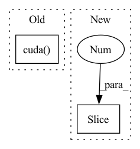

Pattern ID :606

Before Change
update_list_avg = [tb_exp_averager.forward("Loss_average", _) for _ in update_list]
// Computing gradients for fnet and updating weights
fnet_loss = FLAGS.warp_scaling * warp_loss + fnet_loss.detach()
fnet_loss = fnet_loss.cuda()
fnet_optimizer.zero_grad()
fnet_loss.backward()
fnet_optimizer.step()
update_list_avg += [tb, dt_ratio]
After Change
FLAGS.crop_size))
s_input_warp = F.grid_sample(torch.reshape(Frame_t_pre, (
FLAGS.batch_size * (inputimages - 1), output_channel, FLAGS.crop_size, FLAGS.crop_size)),
torch.reshape(Frame_t[:, :, 0:2], (FLAGS.batch_size * (inputimages - 1), 32, 32, 2)))
input0 = torch.cat(
(r_inputs[:, 0, :, :, :], torch.zeros(size=(FLAGS.batch_size, 3 * 4 * 4, FLAGS.crop_size, FLAGS.crop_size),
In pattern: SUPERPATTERN
Frequency: 3
Non-data size: 2
Instances
Fragment ID: 2980797
Project Name: dwightfoster/pytorch-tecogan
Commit Name: b64afd58ac37b8b9ed21dc91b415612572cfa585
Time: 2021-03-11
Author: dwightfoster03@gmail.com
File Name: code/train.py
M Class Name: AnonimousClass
N Class Name: AnonimousClass
M Method Name: TecoGAN(11)
N Method Name: TecoGAN(13)
M Parent Class:
N Parent Class:
M File Name: code/train.py
N File Name: code/train.py
M Start Line: 47
M End Line: 347
N Start Line: 66
N End Line: 145
'>
Before Change
self.textpath = textpath
self.filename = Path(f"./{textpath}.png")
encoded_text = tokenize(text).cuda()
self.encoded_text = perceptor.encode_text(encoded_text).detach()
def reset(self):
self.model.reset()
After Change
def set_text(self, text, text_min=""):
self.text = text
self.text_min = text_min
textpath = underscorify(text[:128])
if self.save_date_time:
textpath = datetime.now().strftime("%y%m%d-%H%M%S-") + textpath
'>
Fragment ID: 2980799
Project Name: lucidrains/big-sleep
Commit Name: 4e40452960be080128e5cf7fc323d48635dc69b0
Time: 2021-02-28
Author: samsepi0l@fastmail.com
File Name: big_sleep/big_sleep.py
M Class Name: Imagine
N Class Name: Imagine
M Method Name: set_text(3)
N Method Name: set_text(2)
M Parent Class: nn.Module
N Parent Class: nn.Module
M File Name: big_sleep/big_sleep.py
N File Name: big_sleep/big_sleep.py
M Start Line: 298
M End Line: 306
N Start Line: 330
N End Line: 339
'>
Before Change
if weights.requires_grad == True:
weights = weights.detach()
cdf = torch.cumsum(weights, dim = -1)
sample_depth = torch.zeros(rays.shape[0], sample_pnum).float().cuda()
invTransformSample(cdf, sample_depth, sample_pnum, near, far)
sort_depth, _ = torch.sort(sample_depth, dim = -1) // shape (ray_num, sample_pnum)
// Use sort depth to calculate sampled points
raw_pts = rays.repeat(repeats = (1, 1, sample_pnum)).view(rays.shape[0], sample_pnum, -1)
After Change
if weights.requires_grad == True:
weights = weights.detach()
// cdf = torch.cumsum(weights, dim = -1)
z_vals_mid = .5 * (coarse_depth[...,1:] + coarse_depth[...,:-1])
z_samples = sample_pdf(z_vals_mid, weights[...,1:-1], sample_pnum, det=False, pytest=False)
// invTransformSample(cdf, sample_depth, sample_pnum, near, far)
sort_depth, _ = torch.sort(z_samples, dim = -1) // shape (ray_num, sample_pnum)
'>
Fragment ID: 2980794
Project Name: enigmatisms/nerf
Commit Name: fcb2a684467c2e14806a0af620ae97e27590ed8d
Time: 2022-04-04
Author: 984041003@qq.com
File Name: py/utils.py
M Class Name: AnonimousClass
N Class Name: AnonimousClass
M Method Name: inverseSample(6)
N Method Name: inverseSample(5)
M Parent Class:
N Parent Class:
M File Name: py/utils.py
N File Name: py/utils.py
M Start Line: 37
M End Line: 40
N Start Line: 35
N End Line: 40